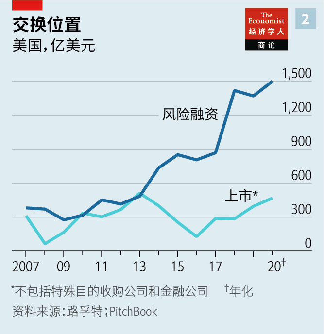

2020-12-22T15:31:15+00:00
Corporate balance-sheets
公司资产负债表
公司資產負債表
A year of raising furiously
疯狂融资的一年
瘋狂融資的一年
Companies have issued more debt and equity in 2020 than ever before. What now?
企业发债发股数量在2020年创下历史新高。接下来呢？
企業發債發股數量在2020年創下歷史新高。接下來呢？


IN MARCH THE corporate world found itself staring into the abyss, recalls Susie Scher. From her perch overseeing global capital markets at Goldman Sachs, a bank, she witnessed firms scrambling for money to keep going as the wheels of commerce ground to a halt amid the pandemic. Many investors panicked. Surely, the thinking went, public markets would freeze in the frigid fog of covid-19 uncertainty—and then stay frozen.
今年3月，整个企业界发觉自己正凝视着深渊，苏西·舍尔（Susie Scher）回忆说。这位高盛全球资本市场的负责人目睹了在商贸的车轮于疫情中渐渐停转之际，企业都在着急忙慌地筹措资金以求活下去。许多投资者惊慌失措。大家都以为公开市场肯定会在疫情不确定性的寒雾中冻结，然后长久冰封下去。
今年3月，整個企業界發覺自己正凝視着深淵，蘇西·舍爾（Susie Scher）回憶說。這位高盛全球資本市場的負責人目睹了在商貿的車輪於疫情中漸漸停轉之際，企業都在着急忙慌地籌措資金以求活下去。許多投資者驚慌失措。大家都以為公開市場肯定會在疫情不確定性的寒霧中凍結，然後長久冰封下去。
Instead, within weeks they began to thaw, then simmer, kindled by trillions of dollars in monetary and fiscal stimulus from governments desperate to avert an economic nuclear winter. In the past few months they have turned boiling hot.
事实却是，各国政府竭力要避免经济核冬天的出现，为此推出了数万亿美元的货币和财政刺激措施，结果市场在不过几周的时间里便开始解冻，随后开始加热，过去几个月里更是变得沸腾滚烫。
事實卻是，各國政府竭力要避免經濟核冬天的出現，為此推出了數萬億美元的貨幣和財政刺激措施，結果市場在不過幾周的時間裡便開始解凍，隨後開始加熱，過去幾個月里更是變得沸騰滾燙。
According to Refinitiv, a data provider, this year the world’s non-financial firms have raised an eye-popping $3.6trn in capital from public investors (see chart 1). Issuance of both investment-grade and riskier junk bonds set records, of $2.4trn and $426bn, respectively. So did the $538bn in secondary stock sales by listed stalwarts, which leapt by 70% from last year, reversing a recent trend to buy back shares rather than issue new ones.
数据供应商路孚特的数字显示，今年全球非金融企业从公众投资者手上募集的资本达到了令人瞠目的3.6万亿美元（见图表1）。投资级债券和风险较高的垃圾债券的发行量都创下了纪录，分别为2.4万亿和4260亿美元。已上市公司发行的新股也达到了5380亿美元，比去年跃升70%，扭转了近年企业倾向回购股票而非发行新股的趋势。
數據供應商路孚特的數字顯示，今年全球非金融企業從公眾投資者手上募集的資本達到了令人瞠目的3.6萬億美元（見圖表1）。投資級債券和風險較高的垃圾債券的發行量都創下了紀錄，分別為2.4萬億和4260億美元。已上市公司發行的新股也達到了5380億美元，比去年躍升70%，扭轉了近年企業傾向回購股票而非發行新股的趨勢。
Initial public offerings (IPOs), too, are flirting with all-time highs, as startups hope to cash in on rich valuations lest stockmarkets lose their frothiness, and venture capitalists (VCs) patience with loss-making business models. VCs still plough three times as much into American startup stars as public investors do. But proceeds from listings are now growing faster than private funding rounds (see chart 2). And the boom is global in nature (see chart 3). On December 2nd JD Health, a Chinese online pharmacy, raked in $3.5bn in Hong Kong. A week later DoorDash, an American food-delivery darling, and Airbnb, a home-rental platform, both more or less matched it in New York.
IPO数量也接近历史高位，原因是创业公司担心股市泡沫破灭，也怕风险资本对亏损的商业模式失去耐性，赶着把高估值兑现。美国的明星创业公司所获得的风投仍然为上市融资额的三倍之多，但现在上市融资的增速已超过私人融资（见图表2）。而且这股热潮是全球性的（见图表3）。12月2日，中国线上药房京东健康在香港招股共融资35亿美元。一周后，美国外卖宠儿DoorDash和民宿平台爱彼迎在纽约上市，两者的融资规模都与京东健康大致相当。
IPO數量也接近歷史高位，原因是創業公司擔心股市泡沫破滅，也怕風險資本對虧損的商業模式失去耐性，趕着把高估值兌現。美國的明星創業公司所獲得的風投仍然為上市融資額的三倍之多，但現在上市融資的增速已超過私人融資（見圖表2）。而且這股熱潮是全球性的（見圖表3）。12月2日，中國線上藥房京東健康在香港招股共融資35億美元。一周後，美國外賣寵兒DoorDash和民宿平台愛彼迎在紐約上市，兩者的融資規模都與京東健康大致相當。
In a world of near-zero interest rates, it appears, investors will bankroll just about anyone with a shot at outliving covid-19. Some of that money will go up in smoke, with or without the corona-crisis. What does not get torched will bolster corporate haves, sharpening the contrast between them and the have-nots.
在利率接近零的世界里，投资者似乎愿意投资任何有机会熬过疫情的公司。不管有没有这场新冠危机，有些钱反正都会化为乌有。而那些没白白烧掉的钱将巩固强大的企业，让它们与弱小企业的对比更加鲜明。
在利率接近零的世界裡，投資者似乎願意投資任何有機會熬過疫情的公司。不管有沒有這場新冠危機，有些錢反正都會化為烏有。而那些沒白白燒掉的錢將鞏固強大的企業，讓它們與弱小企業的對比更加鮮明。
The original spark that lit capital markets on fire was the $6.25bn in debt and equity that Carnival Cruise Lines secured in April, remembers Carlos Hernandez of JPMorgan Chase, a bank. Investors reasoned that cruises will one day set sail again—by which time some of Carnival’s flimsier rivals will have sunk. Other dominant firms have benefited from this logic. Boeing, part of a planemaking duopoly, sold $25bn in bonds this spring, even as its bestselling 737 MAX jetliner remained on the ground and the near-term future of travel up in the air. Many Chinese companies have taken to issuing perpetual bonds, which are never redeemed but pay interest for ever, to repair their balance-sheets.
摩根大通的卡洛斯·埃尔南德斯（Carlos Hernandez）回忆说，最初点燃资本市场火花的是嘉年华邮轮公司（Carnival Cruise Lines）在4月通过发行新债券和股票融资62.5亿美元。投资者的想法是，邮轮总有一天会再次起航，而到那时，嘉年华的一些弱小对手应该已被疫情击沉。其他行业霸主也受益于这一逻辑。飞机制造业双寡头之一的波音公司今年春天还是售出了250亿美元的债券，尽管它畅销的737 MAX喷气客机仍然停飞，航空旅行的短期前景也悬而未决。许多中国公司已开始通过发行永续债券（即永不赎回，一直支付利息）来修复资产负债表。
摩根大通的卡洛斯·埃爾南德斯（Carlos Hernandez）回憶說，最初點燃資本市場火花的是嘉年華郵輪公司（Carnival Cruise Lines）在4月通過發行新債券和股票融資62.5億美元。投資者的想法是，郵輪總有一天會再次起航，而到那時，嘉年華的一些弱小對手應該已被疫情擊沉。其他行業霸主也受益於這一邏輯。飛機製造業雙寡頭之一的波音公司今年春天還是售出了250億美元的債券，儘管它暢銷的737 MAX噴氣客機仍然停飛，航空旅行的短期前景也懸而未決。許多中國公司已開始通過發行永續債券（即永不贖回，一直支付利息）來修復資產負債表。
By the summer, notes Ms Scher, “rescue capital-raising” had given way to something less defensive. Investors’ ultraloose purse-strings allowed opportunistic firms to lock in historically low coupons. S&P Global, a rating agency, calculates that the average investment-grade bond issued this year paid interest of 2.6% amid the covid recession, down from 2.8% in 2019. Thanks to a boom in online shopping and cloud computing, Amazon, which is a leader in both areas, can now borrow at 1.5% for ten years, more cheaply than any American firm since at least 1980—and than some governments. Indebted giants like AT&T, a telecoms-and-entertainment group, are lengthening debt maturities. In November Saudi Aramco, an oil colossus, sold $2.3bn-worth of 50-year bonds, in spite of looming climate policies that may cripple its business of selling crude long before 2070.
舍尔指出，到夏天，“救援融资”已经让位给了不那么被动防御的做法。投资者的慷慨解囊让伺机而动的公司锁定了处于历史低位的息票利率。据评级机构标普全球计算，在疫情引发的经济衰退中，今年发行的投资级债券的平均利率为2.6%，低于2019年的2.8%。得益于网上购物和云计算的蓬勃发展，在这两方面都领先的亚马逊如今能以1.5%的利率发行十年期债券，借款成本至少比1980年以来的任何一家美国公司都要低——还低于一些政府。电信及娱乐集团AT&T这类负债累累的巨头正进行债务展期。11月，石油巨头沙特阿美发行了23亿美元的50年期债券，尽管日益迫近的气候政策可能远不必等到2070年就把它的原油销售业务击垮了。
舍爾指出，到夏天，“救援融資”已經讓位給了不那麼被動防禦的做法。投資者的慷慨解囊讓伺機而動的公司鎖定了處於歷史低位的息票利率。據評級機構標普全球計算，在疫情引發的經濟衰退中，今年發行的投資級債券的平均利率為2.6%，低於2019年的2.8%。得益於網上購物和雲計算的蓬勃發展，在這兩方面都領先的亞馬遜如今能以1.5%的利率發行十年期債券，借款成本至少比1980年以來的任何一家美國公司都要低——還低於一些政府。電信及娛樂集團AT&T這類負債纍纍的巨頭正進行債務展期。11月，石油巨頭沙特阿美髮行了23億美元的50年期債券，儘管日益迫近的氣候政策可能遠不必等到2070年就把它的原油銷售業務擊垮了。

Even cheap debt, of course, must be rolled over and, perpetuities aside, eventually paid back. With stockmarket valuations propped up by loose monetary policy, and only a slim prospect of tightening, many firms opted to shore up their balance-sheets with new share issues. Danaher, a high-rolling industrial conglomerate, raised over $1.5bn by selling new stock just after its share price returned to its pre-pandemic highs in May; it has risen by 39% since. On December 8th Tesla, an electric-car maker whose market value has grown seven-fold this year, to $573bn, said it plans to issue $5bn-worth of shares.
当然，先不谈永续债券，就是成本低廉的债务也必须展期而最终偿还。宽松的货币政策推高了股市估值，而且这些政策未来收紧的机会不大，许多公司因而选择通过发行新股来支撑自己的资产负债表。向来挥霍的工业集团丹纳赫（Danaher）在5月股价刚回升至疫情前高点后就通过发行新股融资超过15亿美元，在那之后股价已上涨39%。电动汽车制造商特斯拉今年市值增长了七倍，达到5730亿美元，它在12月8日表示计划发行50亿美元的股票。
當然，先不談永續債券，就是成本低廉的債務也必須展期而最終償還。寬鬆的貨幣政策推高了股市估值，而且這些政策未來收緊的機會不大，許多公司因而選擇通過發行新股來支撐自己的資產負債表。向來揮霍的工業集團丹納赫（Danaher）在5月股價剛回升至疫情前高點後就通過發行新股融資超過15億美元，在那之後股價已上漲39%。電動汽車製造商特斯拉今年市值增長了七倍，達到5730億美元，它在12月8日表示計劃發行50億美元的股票。
With shareholder payouts trimmed or suspended until the covid fog lifts, the cash held by the world’s 3,000 most valuable listed non-financial firms has exploded to $7.6trn, from $5.7trn last year (see chart 4). Even if you exclude America’s abnormally cash-rich technology giants—Apple, Microsoft, Amazon, Alphabet and Facebook—corporate balance-sheets are brimming with liquidity.
在疫情的迷雾散去之前，股东派息纷纷被削减或暂停，全球市值最高的3000家上市非金融企业持有的现金从去年的5.7万亿美元激增至7.6万亿美元（见图表4）。即使不算上苹果、微软、亚马逊、Alphabet、Facebook这些现金异常充裕的美国科技巨头，其他公司的资产负债表也有充沛的流动性。
在疫情的迷霧散去之前，股東派息紛紛被削減或暫停，全球市值最高的3000家上市非金融企業持有的現金從去年的5.7萬億美元激增至7.6萬億美元（見圖表4）。即使不算上蘋果、微軟、亞馬遜、Alphabet、Facebook這些現金異常充裕的美國科技巨頭，其他公司的資產負債表也有充沛的流動性。
It is still too early to tell what firms will do with all that cash. The merger market is showing signs of life, though mostly as deals put on ice during the pandemic are being revived. Many companies will content themselves with maintaining liquidity, at least until a covid-19 vaccine becomes more widely available.
现在要判断企业会怎样利用这些现金还为时过早。并购市场呈现出复苏的势头，尽管这主要是因为在疫情中冻结的并购计划重新启动了。许多公司将满足于维持一定的流动性，至少在新冠疫苗广泛可得之前是这样。
現在要判斷企業會怎樣利用這些現金還為時過早。併購市場呈現出復蘇的勢頭，儘管這主要是因為在疫情中凍結的併購計劃重新啟動了。許多公司將滿足於維持一定的流動性，至少在新冠疫苗廣泛可得之前是這樣。
Startups, for their part, will use IPO proceeds to blitzscale their way to profitability. The pandemic has made business models that might not have matured for years, such as digital health, suddenly viable. Many will fail. But for now giddy investors are pouring money into any firm whose IPO prospectus features the words “digital”, “cloud” or “health”. Headier still, “special purpose acquisition companies”, which go public with nothing but a promise to merge with a sexy startup later on, and which have raised $70bn in 2020, mostly on Wall Street, are shattering previous records.
至于创业公司，它们会利用IPO所得闪电扩张以实现盈利。这场疫情使得数字医疗这类原本可能等很多年都不会成熟的商业模式瞬间变得切实可行。许多公司最终会失败，但在目前，忘乎所以的投资者只要看见公司的招股书中带有“数字”、“云”或“健康”等字眼就要往里砸钱。更疯狂的是，只靠承诺日后将与某家大热创业公司合并而上市的“特殊目的收购公司”正在打破之前的记录，在2020年它们融资700亿美元，大部分是在华尔街。
至於創業公司，它們會利用IPO所得閃電擴張以實現盈利。這場疫情使得數字醫療這類原本可能等很多年都不會成熟的商業模式瞬間變得切實可行。許多公司最終會失敗，但在目前，忘乎所以的投資者只要看見公司的招股書中帶有“數字”、“雲”或“健康”等字眼就要往裡砸錢。更瘋狂的是，只靠承諾日後將與某家大熱創業公司合并而上市的“特殊目的收購公司”正在打破之前的記錄，在2020年它們融資700億美元，大部分是在華爾街。
Markets seem no more discerning in mainland China, where proceeds from listings hit $63bn, the most since 2010. Hong Kong added another $46bn. Shanghai’s STAR Market, a year-old technology board, welcomed its 200th member earlier this month, bringing its IPO haul to $44bn. In September demand for shares to be traded on the Hong Kong Stock Exchange by Nongfu Spring, a water-bottler, outstripped supply by 1,148 times. Even the authorities’ last-minute suspension of Ant Group’s record-breaking $40bn IPO in Hong Kong and Shanghai, after the fintech titan’s co-founder annoyed regulators, may not frighten other listers. And so long as geopolitical tensions between America and China persist, more Chinese firms with an American stock ticker may avail themselves of a Hong Kong one, observes Julien Begasse de Dhaem of Morgan Stanley, a bank.
中国大陆的市场也似乎同样来者不拒，上市融资额达到630亿美元，为2010年以来最高。香港市场也融资了460亿美元。上海证交所创立一年的科创板本月稍早时迎来了第200名成员，使其IPO总额达到440亿美元。瓶装水公司农夫山泉9月在香港证交所上市，获得了1148倍的超额认购。在蚂蚁集团的联合创始人惹恼监管机构之后，当局在最后一刻叫停了这家金融科技巨头在香港和上海创纪录的400亿美元IPO，但即便如此也未必会吓跑其他计划上市的公司。摩根士丹利的朱力安（Julien Begasse de Dhaem）认为，只要中美之间的地缘政治紧张持续，就可能有更多已在美国上市的中国公司选择在香港二次上市。
中國大陸的市場也似乎同樣來者不拒，上市融資額達到630億美元，為2010年以來最高。香港市場也融資了460億美元。上海證交所創立一年的科創板本月稍早時迎來了第200名成員，使其IPO總額達到440億美元。瓶裝水公司農夫山泉9月在香港證交所上市，獲得了1148倍的超額認購。在螞蟻集團的聯合創始人惹惱監管機構之後，當局在最後一刻叫停了這家金融科技巨頭在香港和上海創紀錄的400億美元IPO，但即便如此也未必會嚇跑其他計劃上市的公司。摩根士丹利的朱力安（Julien Begasse de Dhaem）認為，只要中美之間的地緣政治緊張持續，就可能有更多已在美國上市的中國公司選擇在香港二次上市。
For now, capital is likely to keep flowing. Mr Hernandez says his bank’s pipeline of IPOs looks “the most robust in years”. The ten-year Treasury yield is below 1% and the spreads between American government and corporate bonds have narrowed to pre-pandemic levels. As a result, even riskier firms’ paper yields less than 5%, according to JPMorgan Chase. Investors expecting meaningful returns are therefore eyeing stocks. For the pandemic’s corporate winners, the choice between cheap debt and cheap equity is a win-win.■
目前而言，资本很可能会继续涌动。埃尔南德斯表示，摩根大通手头的IPO项目储备看起来是“这么多年来最强健的”。十年期国债收益率低于1%，美国政府债券和企业债券之间的利差已经收窄到疫情前的水平。因此，据摩根大通的统计，即使是风险较高的公司债券的收益率也不到5%。期望获得可观回报的投资者于是都把目光投向了股票。对跑赢疫情的企业来说，廉价债务和廉价股票就是双赢。
目前而言，資本很可能會繼續涌動。埃爾南德斯表示，摩根大通手頭的IPO項目儲備看起來是“這麼多年來最強健的”。十年期國債收益率低於1%，美國政府債券和企業債券之間的利差已經收窄到疫情前的水平。因此，據摩根大通的統計，即使是風險較高的公司債券的收益率也不到5%。期望獲得可觀回報的投資者於是都把目光投向了股票。對跑贏疫情的企業來說，廉價債務和廉價股票就是雙贏。